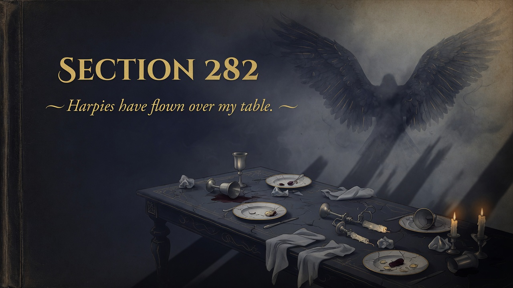
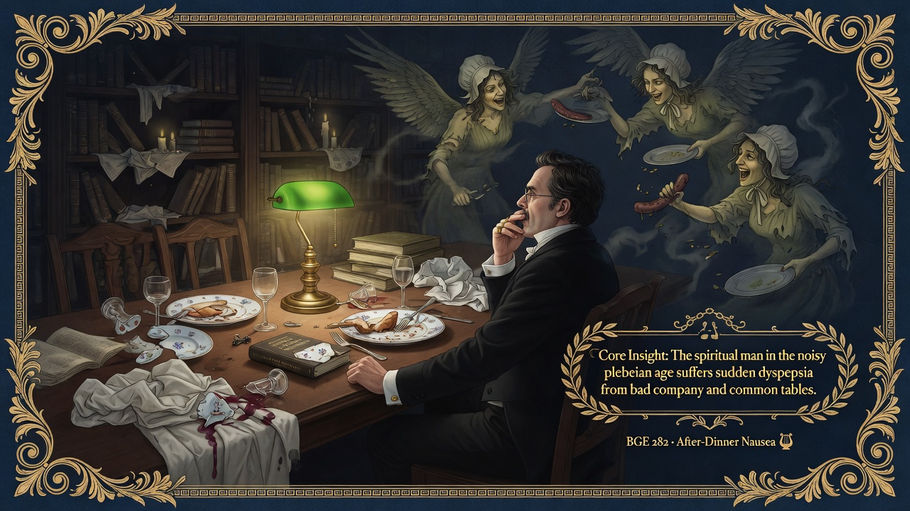
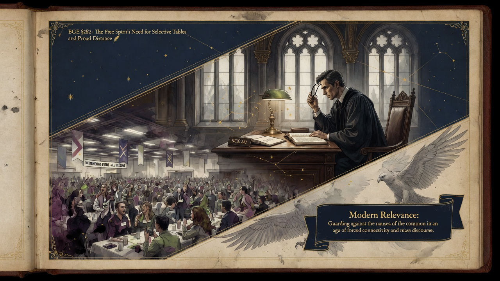

Spiritual nausea isn't weakness—it's a signal that something at the table corrupts your taste. Mandatory networking, algorithm feeds, and pressure to sit at every table make this worse. Better hunger than chronic spiritual dyspepsia—leave the bad table.
Nietzsche generalizes the condition with striking precision. this dyspepsia. The highest types are the hardest to feed because they require rare, delicate, and authentic sustenance.
The after-dinner nausea is not pettiness or weakness. it's the symptom of spiritual refinement and the authentic difficulty of finding worthy "food" and worthy company in an age that flattens distinctions. The most difficult to nourish are often the most discerning and the most endangered by forced commonality.
This aphorism deepens the book's recurring contrast between the noble and the herd, the pathos of distance, and the necessity for the philosopher of the future to select his environment ruthlessly. It foreshadows the later emphasis on solitude as cleanliness and the dangers of "society" making one "common."
In an era of mandatory networking, open offices, algorithmic feeds, viral outrage, and the constant pressure to "sit at every table," the free spirit must learn to recognize — and honor — the signal of nausea. It's information about what cannot be assimilated without corruption of taste and integrity. Leaving the bad table, protecting one's rare nourishment, and cultivating the discipline of selective company are acts of spiritual hygiene, not elitist withdrawal. The lofty soul still risks hunger. but better hunger than chronic dyspepsia.


